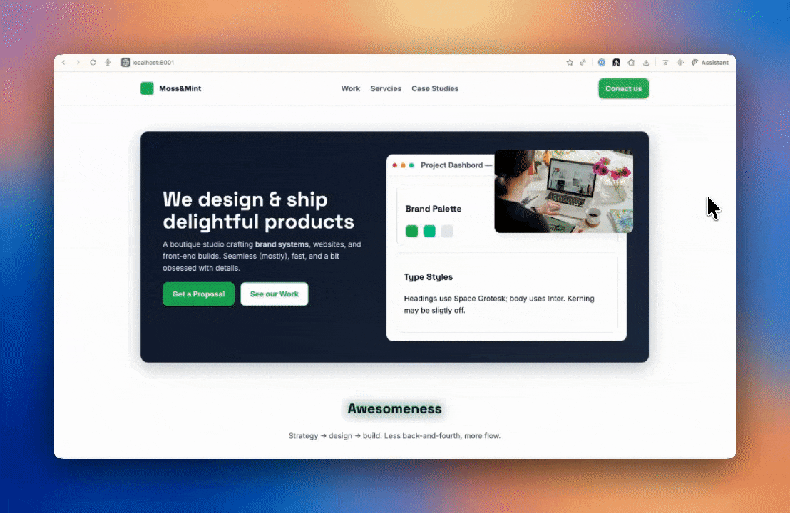

Visual annotations for AI-assisted coding — making UI iteration 10x faster.
Describing visual changes to AI took forever. Identify the element, explain what to change, wait for response, check result, repeat.
Annotated screenshots helped accuracy, but added overhead. And the AI was still guessing which element you meant.
"The AI needed structural context, not just visual context."
A screenshot shows you a button. The DOM tells you it's div.hero-section > button.cta-primary. The AI needs both.
Each one is a discrete, verifiable unit
Structured list with status tracking
bridge command = step-by-step executionWith approval modes
To do → doing → done mirrors task completion
bridge to process the entire queue
Default, works for most pages
For right-heavy layouts
For left-heavy layouts
Problem: Styles from host pages bled into the plugin, breaking the UI unpredictably.
Failed attempts: Aggressive class naming, !important overrides, inline styles. All brittle.
Discovery: Chrome's Sidepanel API. The sidepanel lives next to the page, completely isolated from the page's codebase. No style conflicts. No DOM interference.
This insight became the foundation for my next project.
Chrome's captureVisibleTab over html2canvas (faster, more reliable)
For annotations that don't map to a single element
Same-element annotations process in order
10-minute deep dive on a 107K-subscriber channel.
Visual annotation wasn't enough — you need the image and the selector.
I knew the problem because I lived it daily.
Stars and organic coverage validate the problem exists.
This became the foundation for PAX.